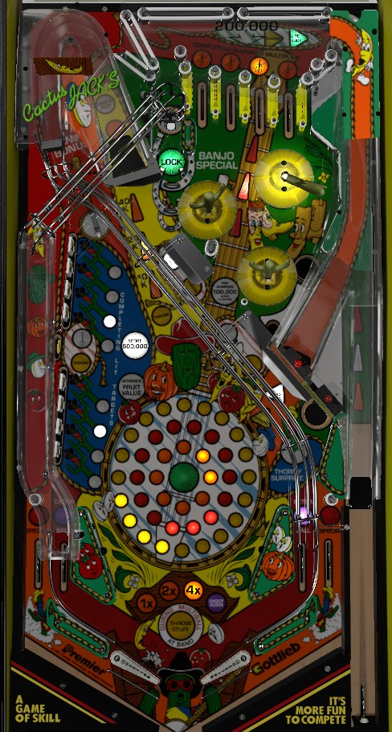

Not to be confused with Cactus Canyon (Bally Williams, 1998), its 2012 fanmade update, its 2021 remake, or its 2025 remake upgrade.
Shoot the left ramp all day. If you can do this repeatedly without missing, you'll start scoring 1,000,000 points per shot, which far outclasses the rest of the game. If the left ramp is not viable for any reason, play for multiball; shoot the top saucer when lit (the target at the end of a full left orbit shot relights lock) or hope to get instant multiball from Thorny Surprise mystery (lower right scoop, relight by right in lane). During multiball, all standup targets and ramps score the Throw Fruit value, which starts at 100,000 and increases by 100,000 each time you complete all of the flashing left drop targets, up to 500,000.
The below picture of Cactus Jack's' playfield was taken from the VPX recreation by UnclePaulie et al.

Cactus Jack's does not have a conventional skill shot. All plunges go to the top of the table, where they will fall into either one of the four top lanes or (rarely) the lock saucer.
Top lanes score 3,000 points whether lit or unlit. Roll through a lit lane to unlight it. Flipper lane change is available; both flippers rotate the lit top lanes in the same direction. Unlighting all 4 top lanes resets them and advances the bonus multiplier by 1, up to a maximum of 7x. Reaching 4x bonus lights an extra ball on one in lane, which can be moved with the flippers. Reaching 5x bonus lights a Special on one out lane, which alternates with any pop bumper or slingshot hit. Further completions of the top lanes once 7x bonus is achieved each score 1,000,000 points.
At the start of the game, your fruit value is Egg, worth 100,000 points, and each of the two 4-banks of drop targets on the left will have one flashing target. Knocking down both flashing targets advances you to Banana, worth 200,000 points, and causes 2 targets in each bank to flash. Completing these advances you to Tomato, worth 300,000 points, and causes 3 targets in each bank to flash. Completing those advances you to Pumpkin, worth 400,000 points, and causes all 8 drop targets to flash. The first time you complete all 8 flashing targets, you are advanced to Watermelon, worth 500,000 points. Any further completions of all 8 drop targets when you are already at Watermelon score an instant 500,000 points. Fruit value never resets over the course of a game.
At the start of each ball, the top saucer is lit for a lock. This saucer can be accessed from below (direct left flipper shot or ricochet right flipper shot) or above (on a plunge or left orbit shot). After playing multiball, this saucer is not lit right away; you must hit the standup target in the very top right of the game, above the top lanes, with a full power left orbit shot to relight the lock. Locking a ball starts 2-ball multiball. Multiball can also be started by shooting the Thorny Surprise scoop in the lower right when lit and getting an Instant Multiball reward.
During multiball, both ramps and all 4 standup targets in the game are lit to score the Fruit Value. You can still increase the Fruit Value during multiball by completing flashing drop targets. Ramps and standup targets never unlight as long as there are 2 balls in play, so collect your Fruit Value from wherever you want as much as you can. There is no other progression during multiball, and there can never be more than 2 balls in play at a time. There is also no grace period for additional Fruit Value collects nor a quick multiball restart following a drain back into single ball play.
At the end of the ball, end of ball bonus is calculated as your current Fruit Value times bonus multiplier, for a maximum of 7x 500,000 = 3,500,000 points.
The left ramp can reasonably be shot by either flipper, and feeds the right in lane. If your Cactus Jack's uses its original Gottlieb flippers, you can likely simply hold the right flipper up and catch the ball with no hassle following a ramp shot. This is important, because the ramp value increases the more times you hit it consecutively without registering any other switch in the game. The value of consecutive ramps follows the sequence 10,000 - 20,000 - 40,000 - 1,000,000 - Jack's Pot (always 3,000,000) - repeatable 1,000,000 until you miss. (On easy settings, the 20,000 may be skipped, and the ramp value goes straight from 10,000 to 40,000, making the unlimited millions even easier to reach.) There is no limit to how many millions can be scored in a single ramp combo or over the course of the game, making this the only strategy worth focusing on if you are exclusively trying for a high score.
Banjo Bonus is a hurry-up that can be started in two ways:
Banjo Bonus hurry-ups are collected just past the entrance of the left orbit. Hurry-ups last about 20 seconds each. The first Banjo Bonus in a game has a starting value of 400,000 points; the second starts at 1,000,000 points; and the third, as well as every Banjo Bonus starting with the 5th, begins at 2,000,000 points. The 4th Banjo Bonus is unique: it is not collected at the left orbit, but rather, it is a Special lit at the third top lane from left for about 20 seconds (cannot be moved with lane change). Progress through the Banjo Bonus sequence is tracked over the whole game and does not reset between balls. Hurry-ups do not pause when the ball is stuck in the pop bumpers, but they do pause when the ball is on a ramp.
When it is not lit for anything else, shots to the right ramp add a letter in Extra Ball, as shown on the display. This is a carryover award that persists across players and games. Completing the spelling of Extra Ball scores an extra ball. This extra ball can be earned multiple times by a single player on a single ball.
Immediately after making the left in lane, the right ramp is lit for Quick Shot. Hitting any switch in the game other than the right ramp unlights the Quick Shot. The first Quick Shot in a game scores 100,000 points; the second scores 200,000 points; the third starts Pop Bumper Round, where all pop bumpers score 100,000 points each for 20 seconds; every Quick Shot starting with the 4th scores 500,000 points.
Any right ramp shot that ends up falling into the second top lane from left scores an additional 200,000 points.
Thorny Surprise is Cactus Jack's mystery award. It is lit for free at the start of each ball. To relight Thorny Surprise after collecting a mystery award, roll through the right in lane (which is most easily done by shooting the left ramp once). In addition to the mystery award if lit, the lower right scoop scores 20,000 points if shot directly, or 40,000 points if a ball fall into the scoop by leaving the pop bumper nest to the lower right. Possible Thorny Surprise awards include:
Cactus Jack's has a conventional in/out lane setup with no center post, gates, or kickback. In lanes score 5,000 points and can be lit for extra ball by reaching 4x bonus multiplier or earning the Light Extra Ball award from Thorny Surprise. Making the left in lane at any time lights the right ramp for Quick Shot, and making the right in lane relights the Thorny Surprise mystery if it was not already lit. Out lanes score 50,000 points and can be lit alternately for Special by reaching 5x bonus multiplier.
End of ball bonus is equal to your current Fruit Value times the bonus multiplier. Fruit Value is advanced by completing sets of flashing left drop targets. Bonus multiplier is advanced through Thorny Surprise mystery awards or by unlighting all 4 top lanes. Fruit Value carries over from ball to ball, but bonus multiplier never does. The Fruit Value can be collected mid-ball during multiball, but the bonus multiplier does not apply to anything other than the end of ball bonus. Max bonus is 7x Watermelon (500,000) = 3,500,000 points.
In competition/novelty play, extra balls score 1,000,000 points. I have not confirmed the value of a Special, but it is almost certainly 1,000,000 as well.
The left ramp can be set to skip 20,000 in its combo value sequence, meaning the first 1,000,000 point left ramp shot is the 3rd consecutive shot rather than the 4th, and the Jack's Pot is scored at the 4th consecutive ramp rather than the 5th.
Letters can be spotted in the spelling of Extra Ball on the right ramp. I do not know the exact nature of this setting, but I have seen copies of the game that always give the E and X for free, meaning an extra ball is available at every 7 ramp shots instead of 9.
I have seen the in lane extra ball be lit at 3x bonus instead of 4x. I am unsure what other settings are possible.